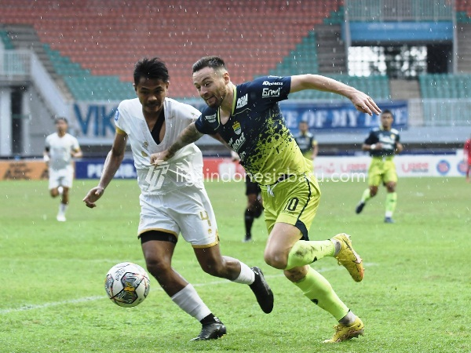

Unggul Jumlah Pemain, Persib Menang Tipis Kontra Dewa United
Berita Liga 1 Indonesia: Paceklik kemenangan dihentikan Persib Bandung usai mengalahkan Dewa United 2-1. Tampil di Stadion Pakansari, Senin (20/3) sore, Maung Bandung sukses mengatasi perlawanan sepuluh pemain lawan.

Maung Bandung asuhan Luis Milla melakukan perubahan formasi di susunan starter. Formasi empat bek dipasang oleh sang pelatih alih-alih memainkan skema tiga bek. Sedangkan Tangsel Warrior tidak bisa memainkan bomber andalan, Karim Rossy karena cedera.
Serangan gencar dilakukan sejak kick off dan beberapa kesempatan didapat. Gol cepat pun lahir di menit 12 dari kaki Marc Klok. Gelandang naturalisasi tersebut sukses menyelesaikan peluang yang diracik Ciro Alves dan David da Silva.
Peluang kembali didapat oleh Persib karena terus tampil menekan tim tamu. Nick Kuipers nyaris mencetak gol dari sundulan di menit 16 menerima umpan lemparan ke dalam Robi Darwis. Namun bola bisa diamankan penjaga gawang.
Terus bermain menyerang justru menyisakan lubang di lini belakang. Hal itu dimanfaatkan Dewa United untuk mencetak gol balasan. Risto Mitrevski menerima umpan terobosan dari Majed Osman dari skema serangan balik dan sepakan kaki kirinya bersarang di gawang Teja Paku Alam.
Bermain imbang di babak pertama, Dewa United mengawali babak kedua dengan masalah. Frendy Saputra diusir wasit karena menerima kartu kuning kedua satu menit setelah turun minum. Situasi ini menguntungkan bagi tuan rumah.Bermain imbang di babak pertama, Dewa United mengawali babak kedua dengan masalah. Frendy Saputra diusir wasit karena menerima kartu kuning kedua satu menit setelah turun minum. Situasi ini menguntungkan bagi tuan rumah.
Gelombang serangan dilancarkan Persib bertubi-tubi yang punya keunggulan jumlah pemain. Peluang emas didapat Ciro Alves di menit 51 setelah melepaskan diri dari kawalan pemain belakang lawan. Tapi sentuhan akhirnya diredam Muhammad Natshir.
Dobrakan yang dilakukan terus menerus akhirnya membuat pertahanan Tangsel Warrior jebol. Robi Darwis yang jadi juru selamat Maung Bandung lewat golnya pada menit 75. Manuver Robi mengecoh dua pemain dan tendangan mendatar meluncur mulus ke dalam gawang.
Sejumlah peluang didapat tim asuhan Luis Milla berkali- kali. Bahkan Ciro Alves dan Febri Hariyadi punya peluang emas yang seharusnya bisa menjadi gol. Tetapi eksekusi kedua pemain ini dihentikan tiang sebelah kiri gawang.
Hingga wasit meniupkan peluit panjang tanda pertandingan usai, skor 2-1 tetap bertahan. Hasil ini memutus puasa kemenangan Persib sekaligus memperpanjang nafas di persaingan perebutan gelar juara Liga 1 2022/2023.